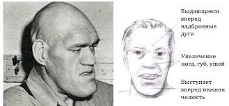

Веб сторінка – «Петрової Любові Сергіївни»
Акромегалія
Акромегалія патологічне збільшення окремих частин тіла, пов'язане з підвищеним виробленням соматотропного гормону
(гормону росту) передньою долею гіпофіза в результаті її пухлинного ураження. Виникає у дорослих людей і проявляється укрупненням рис обличчя (носа, вух, губ, нижньої щелепи), збільшенням стоп і кистей рук, постійними головними болями і болями в суглобах, порушенням статевої та репродуктивної функцій у чоловіків та жінок. Підвищений рівень гормону росту в крові викликає ранню смертність від онкологічних, легеневих, серцево-судинних захворювань.
Акромегалія починає розвиватися після припинення росту організму. Поступово, протягом тривалого періоду, наростає
симптоматика, і відбуваються зміни зовнішності. В середньому акромегалія діагностується через 7 років від дійсного
початку хвороби. Захворювання однаково зустрічається серед жінок і чоловіків, переважно у віці 40-60 років.
Акромегалія є рідкісною ендокринною патологією і спостерігається у 40 чоловік на 1 млн. населення.
Механізм розвитку та причини акромегалії

Секреція соматотропного гормону (соматотропіну, СТГ) здійснюється гіпофізом. У дитячому віці соматотропний гормон керує процесами формування кістково-м'язового скелету та лінійного росту, а у дорослих здійснює контроль за вуглеводним,
жировим, водно-сольовим обміном речовин. Секреція гормону росту регулюється гіпоталамусом, який виробляє спеціальні
нейросекрет: соматоліберін (стимулює вироблення СТГ) і соматостатин (гальмує вироблення СТГ).
У нормі вміст соматотропіну в крові коливається протягом доби, досягаючи свого максимуму в передранкові години. У
пацієнтів з акромегалією спостерігається не тільки підвищення концентрації СТГ у крові, але і порушення нормального
ритму його секреції. Клітини передньої долі гіпофіза в силу різних причин не підкоряються регулюючому впливу
гіпоталамуса і починають активно розмножуватися. Розростання клітин гіпофіза призводить до виникнення доброякісної
залізистої пухлини – аденоми гіпофіза, посилено продукує соматотропін. Розміри аденоми можуть досягати декількох
сантиметрів і перевищувати розмір самої залози, здавлюючи і руйнуючи нормальні клітини гіпофіза.
Певна роль у розвитку акромегалії відводиться спадковості, так як захворювання частіше спостерігається у родичів.
У дитячому та підлітковому віці на тлі триваючого зростання хронічна гіперсекреція СТГ викликає гігантизм, що
характеризується надмірним, але відносно пропорційним збільшенням кісток, органів та м'яких тканин. Із завершенням
фізіологічного росту і окостеніння кістяка розвиваються порушення за типом акромегалії – диспропорційне потовщення
кісток, збільшення внутрішніх органів і характерні порушення обміну речовин. При акромегалії відбувається гіпертрофія паренхіми і строми внутрішніх органів: серця, легенів, підшлункової залози, печінки, селезінки, кишечника. Розростання сполучної тканини веде до склеротичних змін цих органів, підвищується загроза розвитку доброякісних і злоякісних пухлин, у т. ч. ендокринних.
Стадії розвитку акромегалії
Акромегалія характеризується тривалим, багаторічним перебігом. Залежно від виразності симптоматики у розвитку
акромегалії розрізняють декілька етапів:
Стадію преакромегаліі – з'являються початкові, слабко виражені ознаки захворювання. На цій стадії акромегалія
діагностується рідко, виключно за показниками рівня соматотропного гормону в крові та даними КТ головного мозку.
Гіпертрофічну стадію – спостерігається яскраво виражена симптоматика акромегалії.
Пухлинну стадію – на перший план виходять симптоми здавлення розташованих поруч відділів головного мозку (підвищення
внутрішньочерепного тиску, нервові і очні порушення).
Стадію кахексії – виснаження як результат акромегалії.
Симптоми акромегалії
Прояви акромегалії можуть бути обумовлені надлишком соматотропіну або впливом аденоми гіпофіза на зорові нерви і
прилеглі структури головного мозку.
Надлишок гормону росту викликає характерні зміни зовнішності пацієнтів з акромегалією: збільшення нижньої щелепи,
виличні кісток, надбрівних дуг, гіпертрофію губ, носа, вух, що призводять до огрубіння рис обличчя. Зі збільшенням
нижньої щелепи відбувається розбіжність міжзубних проміжків і зміна прикусу. Відзначається збільшення мови
(макроглоссия), на якому друкуються сліди зубів. За рахунок гіпертрофії язика, гортані і голосових зв'язок змінюється голос – стає низьким і хрипким. Зміни в зовнішності при акромегалії відбуваються поступово, непомітно для самого
пацієнта. Спостерігається потовщення пальців, збільшення в розмірах черепа, стоп і кистей настільки, що пацієнт змушений купувати головні убори, взуття та рукавички на кілька розмірів більше, ніж раніше.
У міру збільшення пухлини гіпофіза і здавлення нервів і тканин виникає підвищення внутрішньочерепного тиску,
світлобоязнь, двоїння в очах, болі в області вилиць і чола, запаморочення, блювота, зниження слуху і нюху, оніміння
кінцівок.
У пацієнтів, які страждають акромегалію, підвищується ризик розвитку пухлин щитовидної залози, органів
шлунково-кишкового тракту, матки.
Ускладнення акромегалії
Протягом акромегалії супроводжується розвитком ускладнень з боку практично всіх органів. Найбільш часто у пацієнтів з акромегалією зустрічається гіпертрофія серця, міокардіодистрофія, артеріальна гіпертонія, серцева недостатність. Більш ніж у третини пацієнтів розвивається цукровий діабет, спостерігаються дистрофія печінки та емфізема легенів.
Гіперпродукція факторів росту при акромегалії призводить до розвитку пухлин різних органів, як доброякісних, так і злоякісних. Акромегалії часто супроводжують дифузний або вузловий зоб, фіброзно-кістозна мастопатія, аденоматозний гіперплазія наднирників, полікістоз яєчників, міома матки, поліпоз кишечника. Розвивається гіпофізарна недостатність обумовлена здавленням і руйнуванням пухлиною гіпофіза.
Лікування акромегалії
При акромегалії основною метою лікування є досягнення ремісії захворювання шляхом ліквідації гіперсекреції
соматотропіну і нормалізації концентрації ІРФ I.
Для лікування акромегалії сучасна ендокринологія застосовує медикаментозний, хірургічний, променевий і комбінований
методи.
Для нормалізації в крові рівня гормону призначають прийом аналогів соматостатину – нейросекрет гіпоталамуса, переважної секрецію гормону росту (сандостатина, октреотиду, Соматулін, ланреотиду). При акромегалії показано призначення статевих гормонів, агоністів дофаміну (парлодела, каберголіну, абергіна).
У подальшому зазвичай проводиться одноразова гамма-або променева терапія на область гіпофіза.
При акромегалії найбільш ефективним є хірургічне видалення пухлини в основі черепа через клиноподібну кістку.
При невеликих
розмірах аденом після операції у 85% пацієнтів відзначається нормалізація рівня соматотропіну і стійка ремісія
захворювання.
При значних розмірах пухлини відсоток вилікування в результаті першої операції досягає 30%. Показник смертності при
хірургічному лікуванні акромегалії становить від 0,2 до 5%.